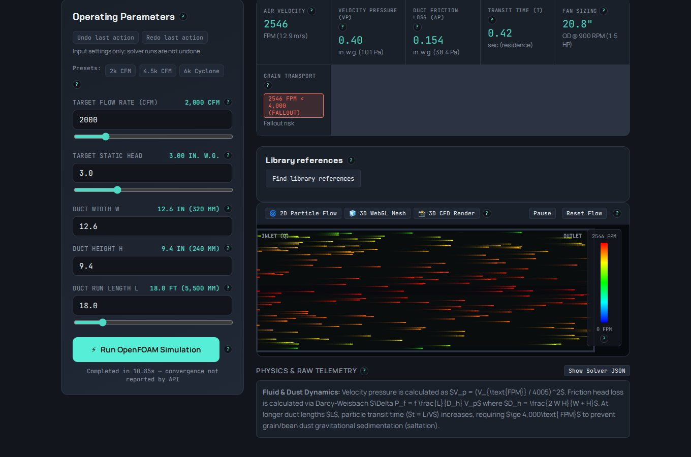

Airflow and loss simulator
A quick check for a single duct section. Set airflow, duct size and run length to get velocity, velocity pressure, friction loss and residence time, and a warning when dust will settle.

What you are looking at
On the left are the operating parameters: target flow, static head, duct width and height, and run length. Across the top are the results: air velocity, velocity pressure, duct friction loss, transit time and a first fan-size estimate. The red tile is the grain-transport check. Here the velocity is below the transport rule of thumb, so the tool flags fallout risk.
The equations are printed under the result: velocity pressure from velocity, Darcy-Weisbach friction with the hydraulic diameter of a rectangular duct, and transit time from length and velocity. Anyone checking the numbers can see how they were made.
Backed by a real solver
The Run OpenFOAM button sends the same case to a local OpenFOAM solve and draws the velocity field as a color map. The hand calculation and the CFD run can then be compared side by side. It runs locally in a container, with no cloud cost per run.
More from this view

After a solve: results update and the solver run is recorded alongside the inputs.
Clip: the OpenFOAM velocity color map for the duct section.